<!DOCTYPE lake>
<h2 data-lake-id="EopQz" id="EopQz"><span data-lake-id="uaacba5a5" id="uaacba5a5">学习目标</span></h2><ul list="u2b2e581a"><li data-lake-id="u6f256cd8" fid="u0aeda6e0" id="u6f256cd8"><span data-lake-id="u28cda4dc" id="u28cda4dc">了解Openharmony</span></li><li data-lake-id="uaf6c7cb8" fid="u0aeda6e0" id="uaf6c7cb8"><span data-lake-id="ua1b6a624" id="ua1b6a624">理解Openharmony的开发框架</span></li><li data-lake-id="u8f1e3f55" fid="u0aeda6e0" id="u8f1e3f55"><span data-lake-id="u119487da" id="u119487da">能够搭建开发环境</span></li></ul><h2 data-lake-id="ScbMj" id="ScbMj"><span data-lake-id="ucb175594" id="ucb175594">学习内容</span></h2><h3 data-lake-id="hESDe" id="hESDe"><span data-lake-id="u2066549c" id="u2066549c">OpenHarmony介绍</span></h3><p data-lake-id="u4b552c85" id="u4b552c85"><span data-lake-id="ue751f227" id="ue751f227">官方网址: </span><a data-lake-id="u77bbcff9" href="https://www.openharmony.cn/mainPlay" id="u77bbcff9" rel="noopener noreferrer" target="_blank"><span data-lake-id="u7fb4648f" id="u7fb4648f">https://www.openharmony.cn/mainPlay</span></a></p><p data-lake-id="uc3dedff9" id="uc3dedff9"><span data-lake-id="ue0dfe9bc" id="ue0dfe9bc">开源项目地址：</span><a data-lake-id="u1683bf72" href="https://gitee.com/openharmony" id="u1683bf72" rel="noopener noreferrer" target="_blank"><span data-lake-id="u8562511d" id="u8562511d">https://gitee.com/openharmony</span></a></p><p data-lake-id="u2ec91eb9" id="u2ec91eb9"><span data-lake-id="ue1b6110f" id="ue1b6110f">​</span><br/></p><p data-lake-id="u5e74d929" id="u5e74d929"><span data-lake-id="ue95de6d7" id="ue95de6d7">OpenHarmony是由开放原子开源基金会（OpenAtom Foundation）孵化及运营的开源项目，目标是面向全场景、全连接、全智能时代，基于开源的方式，搭建一个智能终端设备操作系统的框架和平台，促进万物互联产业的繁荣发展。</span></p><p data-lake-id="ub7b7182b" id="ub7b7182b"><span data-lake-id="ued665044" id="ued665044">​</span><br/></p><h4 data-lake-id="Nd3lA" id="Nd3lA"><span data-lake-id="ue46d4fe6" id="ue46d4fe6">OpenHarmony和HarmonyOS</span></h4><p data-lake-id="u206157ff" id="u206157ff"><span data-lake-id="u0bdd6497" id="u0bdd6497">HarmonyOS官方网站：</span><a data-lake-id="u26993e56" href="https://www.harmonyos.com/" id="u26993e56" rel="noopener noreferrer" target="_blank"><span data-lake-id="ufe4549d1" id="ufe4549d1">https://www.harmonyos.com/</span></a></p><p data-lake-id="u751fe6fd" id="u751fe6fd"><span data-lake-id="u9ff26e09" id="u9ff26e09">​</span><br/></p><p data-lake-id="ue741f63e" id="ue741f63e"><span data-lake-id="u97ee7bcf" id="u97ee7bcf">OpenHarmony是由开放原子开源基金会（OpenAtom Foundation）孵化及运营的开源项目。</span></p><p data-lake-id="u758a1bf5" id="u758a1bf5"><span data-lake-id="ua906058f" id="ua906058f">HarmonyOS是华为的商业项目，是基于OpenHarmony开发的。</span></p><p data-lake-id="u07a5a988" id="u07a5a988"><span data-lake-id="u7c81cbcd" id="u7c81cbcd">​</span><br/></p><p data-lake-id="uc095b2a3" id="uc095b2a3"><span data-lake-id="u62b73ad3" id="u62b73ad3">OpenHarmony是由华为捐助给开放原子的。</span></p><p data-lake-id="u52a52f2d" id="u52a52f2d"><span data-lake-id="uf8584ee4" id="uf8584ee4">开放原子开源基金会是致力于推动全球开源事业发展的非营利机构，于 2020 年 6 月在北京成立，由阿里巴巴、百度、华为、浪潮、360、腾讯、招商银行等多家龙头科技企业联合发起。</span></p><p data-lake-id="u779e6399" id="u779e6399"><span data-lake-id="u83b4e58b" id="u83b4e58b">开放原子开源基金会本着产业公益性服务机构、开源项目管理机构、提升我国对全球开源贡献的引领者的定位，遵循共建、共治、共享原则，系统性打造开源开放框架，搭建国际开源社区，提升行业协作效率，赋能千行百业。</span></p><p data-lake-id="u4ebd52de" id="u4ebd52de"><span data-lake-id="u296939fd" id="u296939fd">目前开放原子开源基金会业务范围主要包括募集资金、专项资助、宣传推广、教育培训、学术交流、国际合作、开源生态建设、咨询服务等业务。</span></p><p data-lake-id="u446da163" id="u446da163"><span data-lake-id="ucb63c08f" id="ucb63c08f">开放原子开源基金会专注于开源软件的推广传播、法务协助、资金支持、技术支撑及开放治理等公益性事业，促进、保护、推广开源软件的发展与应用；致力于推进开源项目、开源生态的繁荣和可持续发展，提升我国对全球开源事业的贡献。</span></p><p data-lake-id="u94953205" id="u94953205"><span data-lake-id="u8d74996f" id="u8d74996f">开发原子属于国家队。</span></p><h4 data-lake-id="CJ0kM" id="CJ0kM"><span data-lake-id="u151d39bd" id="u151d39bd">系统技术架构</span></h4><p data-lake-id="u7f079638" id="u7f079638">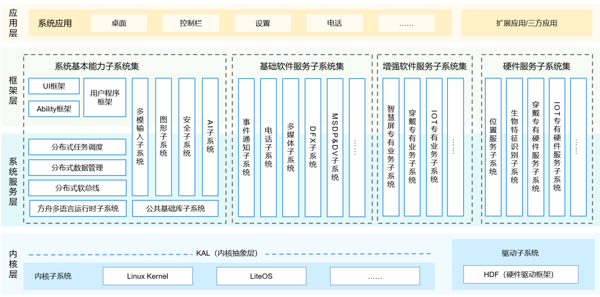</p><p data-lake-id="uedb96977" id="uedb96977"><span data-lake-id="u925e7ba4" id="u925e7ba4" style="color: rgba(0, 0, 0, 0.87)">整体遵从分层设计，从下向上依次为：内核层、系统服务层、框架层和应用层。系统功能按照“系统 &gt; 子系统 &gt; 功能/模块”逐级展开，在多设备部署场景下，支持根据实际需求裁剪某些非必要的子系统或功能/模块。</span></p><h5 data-lake-id="gAJwH" id="gAJwH"><span data-lake-id="ucb91c1e7" id="ucb91c1e7" style="color: rgba(0, 0, 0, 0.87)">内核层</span></h5><ul list="u668767c4"><li data-lake-id="u87a81166" fid="u7cc7e54b" id="u87a81166"><span data-lake-id="u6f64c076" id="u6f64c076" style="color: rgba(0, 0, 0, 0.87)">内核子系统：HarmonyOS采用多内核（Linux内核、HarmonyOS微内核或者LiteOS）设计，支持针对不同资源受限设备选用适合的OS内核。内核抽象层（KAL，Kernel Abstract Layer）通过屏蔽多内核差异，对上层提供基础的内核能力，包括进程/线程管理、内存管理、文件系统、网络管理和外设管理等。</span></li><li data-lake-id="uacea4783" fid="u7cc7e54b" id="uacea4783"><span data-lake-id="u8aa8761e" id="u8aa8761e" style="color: rgba(0, 0, 0, 0.87)">驱动子系统：硬件驱动框架（HDF）是HarmonyOS硬件生态开放的基础，提供统一外设访问能力和驱动开发、管理框架。</span></li></ul><p data-lake-id="u203ca7b8" id="u203ca7b8">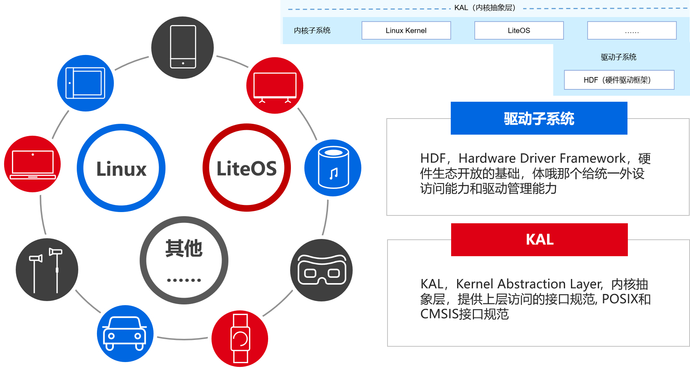</p><p data-lake-id="u35030182" id="u35030182"><span data-lake-id="u12a21d6d" id="u12a21d6d" style="color: rgba(0, 0, 0, 0.87)">多内核的好处:</span></p><ul list="u750840a5"><li data-lake-id="ue834df3c" fid="ub7c61acf" id="ue834df3c"><span data-lake-id="u6ce04c70" id="u6ce04c70" style="color: rgba(0, 0, 0, 0.87)">安全: HAL层对上隔离了框架层和内核层，对下隔离了内核层和HDF，保证了上下访问间的安全性，生而安全，天生安全</span></li><li data-lake-id="ua3200ec7" fid="ub7c61acf" id="ua3200ec7"><span data-lake-id="u95bf2061" id="u95bf2061" style="color: rgba(0, 0, 0, 0.87)">友好: 对于设备生产厂商而言，每家擅长的不通过，可供选择的内核越多，厂商选择性越多，支持也越多</span></li><li data-lake-id="uf395225e" fid="ub7c61acf" id="uf395225e"><span data-lake-id="uf7c07b69" id="uf7c07b69" style="color: rgba(0, 0, 0, 0.87)">复用: 目前市面上的Linux内核已经相当成熟，配套软硬件也多，无需再去重新编写，可以直接拿来使用</span></li><li data-lake-id="u109b19e3" fid="ub7c61acf" id="u109b19e3"><span data-lake-id="u01484c81" id="u01484c81" style="color: rgba(0, 0, 0, 0.87)">高效: 对于硬件资源内力不足的设备，无需部署繁重的内核，可以采用微内核LiteOS作为内核，更加精简，更加高效</span></li></ul><p data-lake-id="u7013ab5d" id="u7013ab5d"><strong><span data-lake-id="u7a7ad9d2" id="u7a7ad9d2" style="color: rgba(0, 0, 0, 0.87)">鸿蒙提供的内核</span></strong></p><ul list="u0ad33c90"><li data-lake-id="u90cb90ab" fid="uc4635f00" id="u90cb90ab"><span data-lake-id="uce73ed01" id="uce73ed01" style="color: rgba(0, 0, 0, 0.87)">linux</span></li><li data-lake-id="u1cc00e7b" fid="uc4635f00" id="u1cc00e7b"><span data-lake-id="uafe95bd2" id="uafe95bd2" style="color: rgba(0, 0, 0, 0.87)">liteos-m 适用于MCU类L0级别设备</span></li><li data-lake-id="ue9f95107" fid="uc4635f00" id="ue9f95107"><span data-lake-id="u31da0241" id="u31da0241" style="color: rgba(0, 0, 0, 0.87)">lites-a 适用于嵌入式L1级别设备</span></li><li data-lake-id="uc083a2c0" fid="uc4635f00" id="uc083a2c0"><span data-lake-id="uc54d3045" id="uc54d3045" style="color: rgba(0, 0, 0, 0.87)">鸿蒙内核,暂无提供</span></li><li data-lake-id="u7ac1f60e" fid="uc4635f00" id="u7ac1f60e"><span data-lake-id="u8defc00f" id="u8defc00f" style="color: rgba(0, 0, 0, 0.87)">其他内核,任何人或机构自由可扩展</span></li></ul><h5 data-lake-id="JqICt" id="JqICt"><span data-lake-id="u55b9f4b8" id="u55b9f4b8" style="color: rgba(0, 0, 0, 0.87)">系统服务层</span></h5><p data-lake-id="u34b958f5" id="u34b958f5">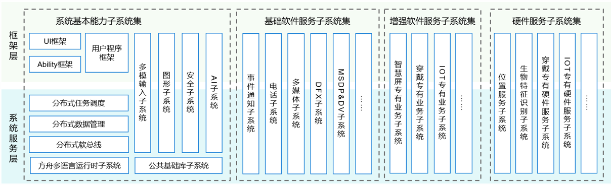</p><p data-lake-id="u120046f6" id="u120046f6"><span data-lake-id="u55e4f111" id="u55e4f111" style="color: rgba(0, 0, 0, 0.87)">系统服务层是HarmonyOS的核心能力集合，通过框架层对应用程序提供服务。该层包含以下几个部分：</span></p><ul list="ue62bc905"><li data-lake-id="u3c869cd6" fid="u637be060" id="u3c869cd6"><span data-lake-id="u81d4d4da" id="u81d4d4da" style="color: rgba(0, 0, 0, 0.87)">系统基本能力子系统集：为分布式应用在HarmonyOS多设备上的运行、调度、迁移等操作提供了基础能力，由分布式软总线、分布式数据管理、分布式任务调度、公共基础库、多模输入、图形、安全、AI等子系统组成。</span></li><li data-lake-id="uad0bb61b" fid="u637be060" id="uad0bb61b"><span data-lake-id="ue2cfcb57" id="ue2cfcb57" style="color: rgba(0, 0, 0, 0.87)">基础软件服务子系统集：为HarmonyOS提供公共的、通用的软件服务，由事件通知、电话、多媒体、DFX（Design For X） 、MSDP&amp;DV等子系统组成。</span></li><li data-lake-id="u0c8e643a" fid="u637be060" id="u0c8e643a"><span data-lake-id="ue40b6e9b" id="ue40b6e9b" style="color: rgba(0, 0, 0, 0.87)">增强软件服务子系统集：为HarmonyOS提供针对不同设备的、差异化的能力增强型软件服务，由智慧屏专有业务、穿戴专有业务、IoT专有业务等子系统组成。</span></li><li data-lake-id="u6bc82285" fid="u637be060" id="u6bc82285"><span data-lake-id="u7e91a649" id="u7e91a649" style="color: rgba(0, 0, 0, 0.87)">硬件服务子系统集：为HarmonyOS提供硬件服务，由位置服务、生物特征识别、穿戴专有硬件服务、IoT专有硬件服务等子系统组成。 根据不同设备形态的部署环境，基础软件服务子系统集、增强软件服务子系统集、硬件服务子系统集内部可以按子系统粒度裁剪，每个子系统内部又可以按功能粒度裁剪。</span></li></ul><h5 data-lake-id="s7uIZ" id="s7uIZ"><span data-lake-id="u1b034983" id="u1b034983" style="color: rgba(0, 0, 0, 0.87)">框架层</span></h5><p data-lake-id="uf8ced8fe" id="uf8ced8fe"><span data-lake-id="uf16980b5" id="uf16980b5" style="color: rgba(0, 0, 0, 0.87)">框架层为HarmonyOS应用开发提供了Java/C/C++/JS等多语言的用户程序框架和Ability框架，两种UI框架（包括适用于Java语言的Java UI框架、适用于JS语言的JS UI框架），以及各种软硬件服务对外开放的多语言框架API。根据系统的组件化裁剪程度，HarmonyOS设备支持的API也会有所不同。</span></p><h5 data-lake-id="V476c" id="V476c"><span data-lake-id="u07787983" id="u07787983" style="color: rgba(0, 0, 0, 0.87)">应用层</span></h5><p data-lake-id="ucce27810" id="ucce27810">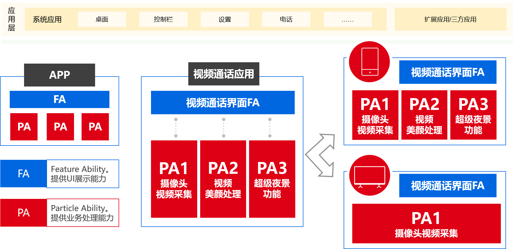</p><p data-lake-id="udf63f9e6" id="udf63f9e6"><span data-lake-id="u4e23902f" id="u4e23902f" style="color: rgba(0, 0, 0, 0.87)">应用层包括系统应用和第三方非系统应用。HarmonyOS的应用由一个或多个FA（Feature Ability）或PA（Particle Ability）组成。其中，FA有UI界面，提供与用户交互的能力；而PA无UI界面，提供后台运行任务的能力以及统一的数据访问抽象。FA在进行用户交互时所需的后台数据访问也需要由对应的PA提供支撑。基于FA/PA开发的应用，能够实现特定的业务功能，支持跨设备调度与分发，为用户提供一致、高效的应用体验。</span></p><p data-lake-id="u623a3391" id="u623a3391"><br/></p><h4 data-lake-id="YgCDP" id="YgCDP"><span data-lake-id="u67118ef8" id="u67118ef8">南向开发和北向开发</span></h4><p data-lake-id="ude81f53d" id="ude81f53d"><span data-lake-id="uaa46c432" id="uaa46c432">简单来说，上北下南。上层应用开发我们称之为北向开发，下层系统开发我们称之为南向开发。</span></p><p data-lake-id="u9236ddbd" id="u9236ddbd"><span data-lake-id="u81a387d7" id="u81a387d7">南向开发需要做的是底层内核的开发，硬件驱动开发，中间件的开发。</span></p><p data-lake-id="udd1f048d" id="udd1f048d"><span data-lake-id="u0eeef6d5" id="u0eeef6d5">北向开发就是开发我们熟知的APP。</span></p><p data-lake-id="u9f58eb85" id="u9f58eb85"><span data-lake-id="ufc0c0d1d" id="ufc0c0d1d">​</span><br/></p><p data-lake-id="ud94534d9" id="ud94534d9"><span data-lake-id="ua46c7a71" id="ua46c7a71">对于南向开发，OpenHarmony系统分为三个版本：</span></p><table class="lake-table" data-lake-id="SQ8CO" id="SQ8CO" margin="true" style="width: 739px"><colgroup><col width="132"/><col width="187"/><col width="100"/><col width="320"/></colgroup><tbody><tr data-lake-id="u1514b9e6" id="u1514b9e6"><td data-lake-id="u0ced3734" id="u0ced3734" style="vertical-align: middle"><p data-lake-id="ucb8a91ed" id="ucb8a91ed" style="text-align: center"><strong><span data-lake-id="u4c1d60bf" id="u4c1d60bf" style="color: rgb(64, 72, 91)">类型</span></strong></p></td><td data-lake-id="uce56a6d4" id="uce56a6d4" style="vertical-align: middle"><p data-lake-id="u6ca0e1b2" id="u6ca0e1b2" style="text-align: center"><strong><span data-lake-id="udcd5a9f7" id="udcd5a9f7" style="color: rgb(64, 72, 91)">处理器</span></strong></p></td><td data-lake-id="u586d9e0b" id="u586d9e0b" style="vertical-align: middle"><p data-lake-id="ud76376c5" id="ud76376c5" style="text-align: center"><strong><span data-lake-id="u34b2ee45" id="u34b2ee45" style="color: rgb(64, 72, 91)">最小内存</span></strong></p></td><td data-lake-id="uc4a6d21a" id="uc4a6d21a" style="vertical-align: middle"><p data-lake-id="u025eee9c" id="u025eee9c" style="text-align: center"><strong><span data-lake-id="u15ff6fb9" id="u15ff6fb9" style="color: rgb(64, 72, 91)">能力</span></strong></p></td></tr><tr data-lake-id="u87a699bf" id="u87a699bf"><td data-lake-id="u006641ac" id="u006641ac" style="vertical-align: middle"><p data-lake-id="u6a789b48" id="u6a789b48" style="text-align: center"><span data-lake-id="u33c00cb0" id="u33c00cb0" style="color: rgb(64, 72, 91)">轻量系统</span></p><p data-lake-id="u8349b079" id="u8349b079" style="text-align: center"><span data-lake-id="ub8a3233d" id="ub8a3233d" style="color: rgb(64, 72, 91)">mini system</span></p></td><td data-lake-id="u873b5482" id="u873b5482" style="vertical-align: middle"><p data-lake-id="u83ca9288" id="u83ca9288" style="text-align: center"><span data-lake-id="u0f69fe54" id="u0f69fe54" style="color: rgb(64, 72, 91)">MCU类处理器（例如Arm Cortex-M、RISC-V 32位的设备）</span></p></td><td data-lake-id="u622be457" id="u622be457" style="vertical-align: middle"><p data-lake-id="u06b1ee08" id="u06b1ee08" style="text-align: center"><span data-lake-id="uece9abe2" id="uece9abe2" style="color: rgb(64, 72, 91)">128KiB</span></p></td><td data-lake-id="u931b4df1" id="u931b4df1"><p data-lake-id="u995e4e6e" id="u995e4e6e" style="text-align: left"><span data-lake-id="uf948b13a" id="uf948b13a" style="color: rgb(64, 72, 91)">提供多种轻量级网络协议，轻量级的图形框架，以及丰富的IOT总线读写部件等。可支撑的产品如智能家居领域的连接类模组、传感器设备、穿戴类设备等。</span></p></td></tr><tr data-lake-id="u35ea344b" id="u35ea344b"><td data-lake-id="uf07c6716" id="uf07c6716" style="background-color: rgb(246, 248, 250); vertical-align: middle"><p data-lake-id="u87c2cccd" id="u87c2cccd" style="text-align: center"><span data-lake-id="uc1445751" id="uc1445751" style="color: rgb(64, 72, 91)">小型系统</span></p><p data-lake-id="ueb8eb734" id="ueb8eb734" style="text-align: center"><span data-lake-id="ue99118f7" id="ue99118f7" style="color: rgb(64, 72, 91)">small system</span></p></td><td data-lake-id="uafa143b8" id="uafa143b8" style="background-color: rgb(246, 248, 250); vertical-align: middle"><p data-lake-id="u038ef78d" id="u038ef78d" style="text-align: center"><span data-lake-id="u4ff0fd15" id="u4ff0fd15" style="color: rgb(64, 72, 91)">应用处理器（例如Arm Cortex-A的设备）</span></p></td><td data-lake-id="u511768ad" id="u511768ad" style="background-color: rgb(246, 248, 250); vertical-align: middle"><p data-lake-id="uf0d691fc" id="uf0d691fc" style="text-align: center"><span data-lake-id="u214cdb88" id="u214cdb88" style="color: rgb(64, 72, 91)">1MiB</span></p></td><td data-lake-id="u5820b524" id="u5820b524" style="background-color: rgb(246, 248, 250)"><p data-lake-id="u7b5003f2" id="u7b5003f2" style="text-align: left"><span data-lake-id="u0c229924" id="u0c229924" style="color: rgb(64, 72, 91)">提供更高的安全能力、标准的图形框架、视频编解码的多媒体能力。可支撑的产品如智能家居领域的IP Camera、电子猫眼、路由器以及智慧出行域的行车记录仪等。</span></p></td></tr><tr data-lake-id="u79b88051" id="u79b88051"><td data-lake-id="ucb494c89" id="ucb494c89" style="vertical-align: middle"><p data-lake-id="u9e8d0c0c" id="u9e8d0c0c" style="text-align: center"><span data-lake-id="u9cb63510" id="u9cb63510" style="color: rgb(64, 72, 91)">标准系统</span></p><p data-lake-id="u9aff3e19" id="u9aff3e19" style="text-align: center"><span data-lake-id="ud5a01511" id="ud5a01511" style="color: rgb(64, 72, 91)">standard system</span></p></td><td data-lake-id="uaaae12c3" id="uaaae12c3" style="vertical-align: middle"><p data-lake-id="ufe97b516" id="ufe97b516" style="text-align: center"><span data-lake-id="u95d24946" id="u95d24946" style="color: rgb(64, 72, 91)">应用处理器（例如Arm Cortex-A的设备）</span></p></td><td data-lake-id="u3e85c43a" id="u3e85c43a" style="vertical-align: middle"><p data-lake-id="u27aaf3e3" id="u27aaf3e3" style="text-align: center"><span data-lake-id="ue4c4d284" id="ue4c4d284" style="color: rgb(64, 72, 91)">128MiB</span></p></td><td data-lake-id="ua48ffd5e" id="ua48ffd5e"><p data-lake-id="u9146fada" id="u9146fada" style="text-align: left"><span data-lake-id="u57f7f2c5" id="u57f7f2c5" style="color: rgb(64, 72, 91)">提供增强的交互能力、3D GPU以及硬件合成能力、更多控件以及动效更丰富的图形能力、完整的应用框架。可支撑的产品如高端的冰箱显示屏。</span></p></td></tr></tbody></table><p data-lake-id="uca3436ca" id="uca3436ca"><span data-lake-id="u92788a35" id="u92788a35">​</span><br/></p><h3 collapsed="true" data-lake-id="GMuqG" id="GMuqG"><span data-lake-id="u91c8ebeb" id="u91c8ebeb">开发环境搭建</span></h3><h4 data-lake-id="REf3B" id="REf3B"><span data-lake-id="u146d4fd9" id="u146d4fd9">编译环境</span></h4><p data-lake-id="ubd3feb8b" id="ubd3feb8b"><span data-lake-id="u61b0904b" id="u61b0904b">编译环境，采用的是Linux进行编译，为了满足编译环境，我们采用Docker容器进行编译，方便环境的轻量化。</span></p><ol list="u5b51e8d4"><li data-lake-id="ucdd10caf" fid="u9a48196e" id="ucdd10caf"><span data-lake-id="u7083c77e" id="u7083c77e">导入提供的Docker Image</span></li></ol><span class="yuque-card-unsupported">[codeblock]</span><p data-lake-id="ubef6c3fd" id="ubef6c3fd" style="padding-left: 2em">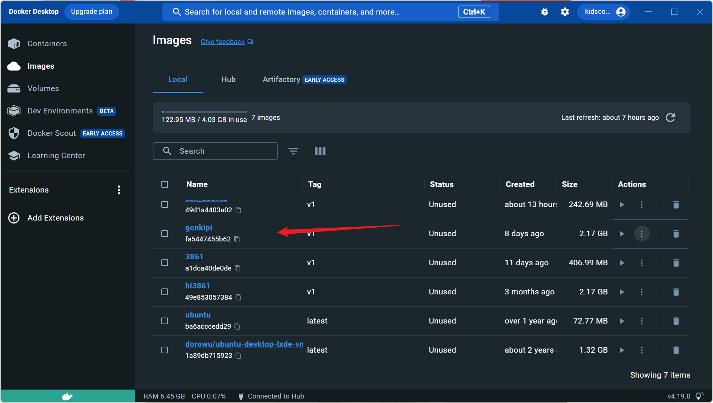</p><ol list="uaab2c696" start="2"><li data-lake-id="u1ffeadc3" fid="ub37f4307" id="u1ffeadc3"><span data-lake-id="uf6d0bdd4" id="uf6d0bdd4">运行镜像</span></li></ol><p data-lake-id="ud1b513ca" id="ud1b513ca" style="padding-left: 2em">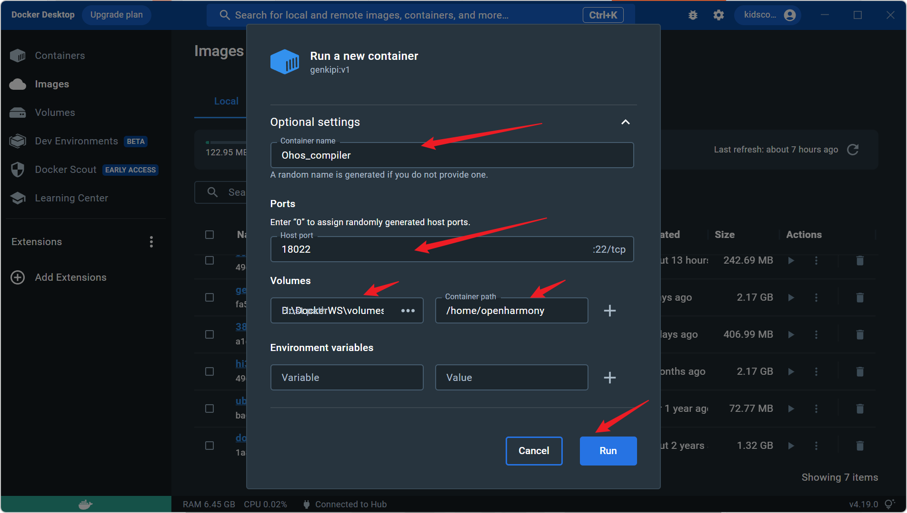</p><ul data-lake-indent="1" list="uc7078b05"><li data-lake-id="u8ab072f4" fid="u6dba742d" id="u8ab072f4"><span data-lake-id="u6fbd4f07" id="u6fbd4f07">容器名称配置：根据个人需求进行配置</span></li><li data-lake-id="u55d11a62" fid="u6dba742d" id="u55d11a62"><span data-lake-id="u13d9acdd" id="u13d9acdd">端口映射配置：根据个人需求进行配置</span></li><li data-lake-id="u705fdff3" fid="u6dba742d" id="u705fdff3"><span data-lake-id="u6a8600e9" id="u6a8600e9">文件映射配置：本地部分根据个人需求进行配置。容器内的必须为:</span><code data-lake-id="u34e23cbc" id="u34e23cbc"><span data-lake-id="u1c76b31d" id="u1c76b31d">/home/openharmony</span></code></li></ul><span class="yuque-card-unsupported">[codeblock]</span><h4 data-lake-id="niyu3" id="niyu3"><span data-lake-id="ue877d55a" id="ue877d55a">编码环境</span></h4><p data-lake-id="ua1247ec5" id="ua1247ec5"><span data-lake-id="u34948daa" id="u34948daa">采用vscode进行编码。</span></p><h5 data-lake-id="dwHoe" id="dwHoe"><span data-lake-id="uab5b1005" id="uab5b1005">插件安装</span></h5><p data-lake-id="u1bd4c431" id="u1bd4c431"><span data-lake-id="ub9ad23bc" id="ub9ad23bc">打开vscode的插件安装条目，搜索插件</span><code data-lake-id="u3bf99cd7" id="u3bf99cd7"><span data-lake-id="uffe0d185" id="uffe0d185">Remote Development</span></code><span data-lake-id="u288b51a8" id="u288b51a8">,进行安装</span></p><h5 data-lake-id="ox7b5" id="ox7b5"><span data-lake-id="ucb5bd3e9" id="ucb5bd3e9">vscode挂载Docker容器</span></h5><ol list="u4e49565f"><li data-lake-id="u4a878d9a" fid="ue0a383b0" id="u4a878d9a"><span data-lake-id="u68127aa9" id="u68127aa9">打开vscode，进入到</span><code data-lake-id="u2fb2ef29" id="u2fb2ef29"><span data-lake-id="ue5f358be" id="ue5f358be">Remote Development</span></code><span data-lake-id="u23d2d58a" id="u23d2d58a">窗口</span></li></ol><p data-lake-id="u0e1f6f67" id="u0e1f6f67" style="padding-left: 2em">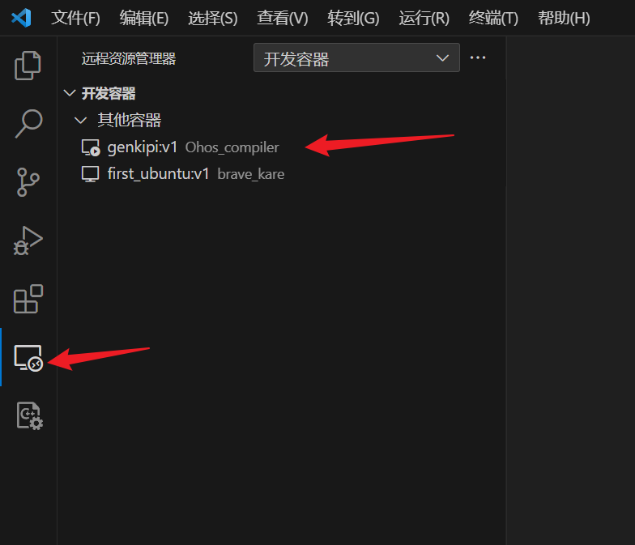</p><ol list="u720c476b" start="2"><li data-lake-id="u075eafeb" fid="u9e2a2951" id="u075eafeb"><span data-lake-id="u24adcc07" id="u24adcc07">挂载容器。选中刚刚启动的容器，鼠标右键，选择</span><code data-lake-id="u138af36a" id="u138af36a"><span data-lake-id="u202a4332" id="u202a4332">附加到容器</span></code></li></ol><p data-lake-id="uf23ae0d6" id="uf23ae0d6" style="padding-left: 2em">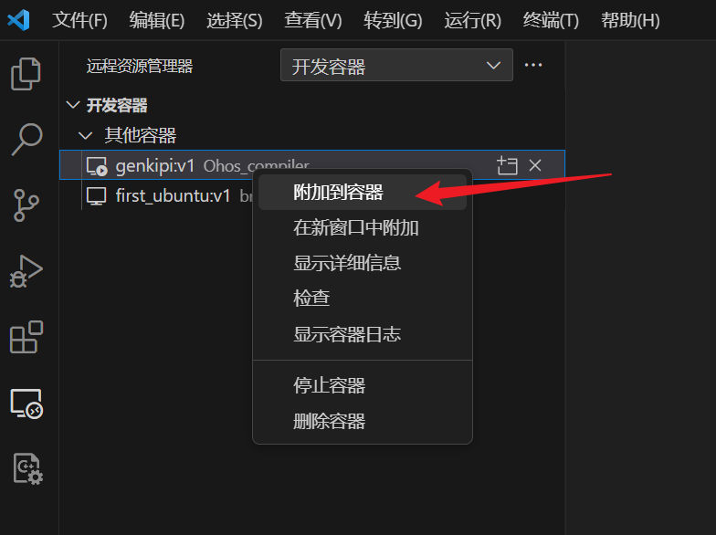</p><ol list="u8aa6277f" start="3"><li data-lake-id="u32b840e0" fid="uca613057" id="u32b840e0"><span data-lake-id="ua2f36ebb" id="ua2f36ebb">此时会打开新的窗体，显示正在安装，等待环境准备完成</span></li></ol><p data-lake-id="uaa48bb4a" id="uaa48bb4a" style="padding-left: 2em">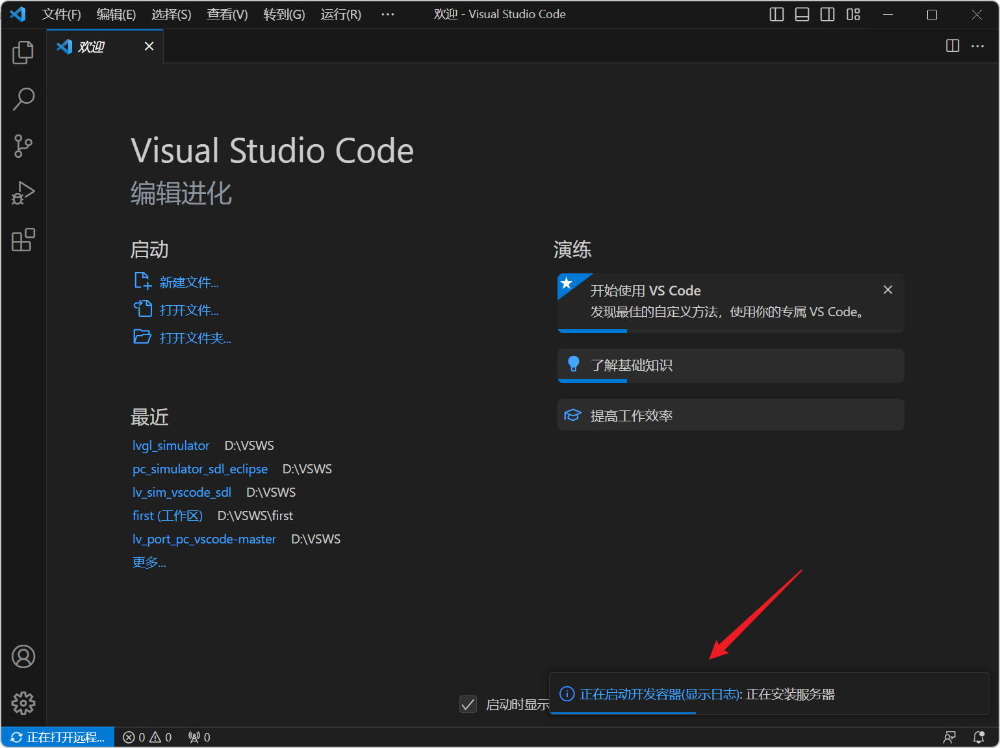</p><p data-lake-id="uc58d3958" id="uc58d3958" style="padding-left: 2em"><span data-lake-id="u0d45b286" id="u0d45b286">第一次加载比较慢，请耐心等待。</span></p><ol list="u5bcf1044" start="4"><li data-lake-id="uf9b03b15" fid="u57fa8247" id="uf9b03b15"><span data-lake-id="u0767ff85" id="u0767ff85">加载项目目录</span></li></ol><p data-lake-id="u2e3e4bd3" id="u2e3e4bd3" style="padding-left: 2em">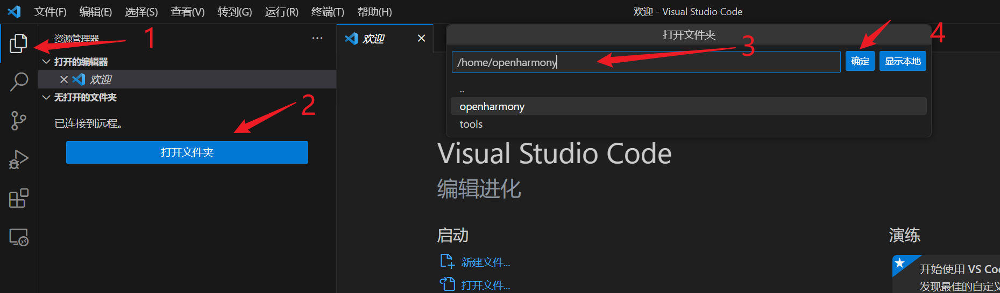</p><ul data-lake-indent="1" list="u315d23c9"><li data-lake-id="u8ede8273" fid="uae288067" id="u8ede8273"><span data-lake-id="u7d8f2455" id="u7d8f2455">打开资源管理器</span></li><li data-lake-id="uac46d19c" fid="uae288067" id="uac46d19c"><span data-lake-id="u819997a2" id="u819997a2">点击打开文件夹</span></li><li data-lake-id="ub4bcc1bd" fid="uae288067" id="ub4bcc1bd"><span data-lake-id="ud3122c6f" id="ud3122c6f">在中间会弹出框，选择打开</span><code data-lake-id="u5318b27d" id="u5318b27d"><span data-lake-id="u7c5a5fce" id="u7c5a5fce">/home/openharmony</span></code><span data-lake-id="u2b36a460" id="u2b36a460">文件夹，点击确认</span></li></ul><p data-lake-id="ub7916a3f" id="ub7916a3f" style="padding-left: 2em">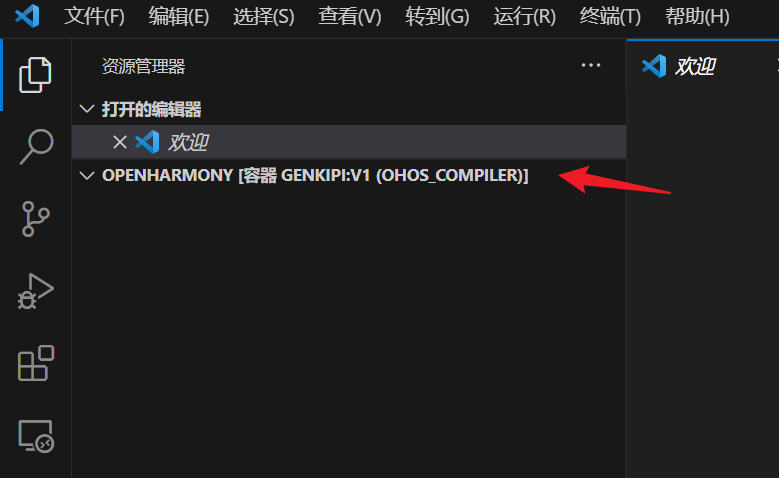</p><p data-lake-id="u33027473" id="u33027473" style="padding-left: 2em"><span data-lake-id="ua8d9e297" id="ua8d9e297">加载完成后，如上图。</span></p><p data-lake-id="uf5afe96c" id="uf5afe96c"><br/></p><h4 data-lake-id="nLiLr" id="nLiLr"><span data-lake-id="u477d6e50" id="u477d6e50">程序编译和烧录</span></h4><h5 data-lake-id="P6QxU" id="P6QxU"><span data-lake-id="u15c6b8b8" id="u15c6b8b8">源码添加</span></h5><p data-lake-id="u78efa584" id="u78efa584"><span data-lake-id="u4f542ca3" id="u4f542ca3">将提供的</span><code data-lake-id="ucd64faa4" id="ucd64faa4"><span data-lake-id="ua147d4db" id="ua147d4db">source.zip</span></code><span data-lake-id="ud0887f3e" id="ud0887f3e">解压，放到启动容器时的本地映射路径下，如下图：</span></p><p data-lake-id="ue3779dfd" id="ue3779dfd">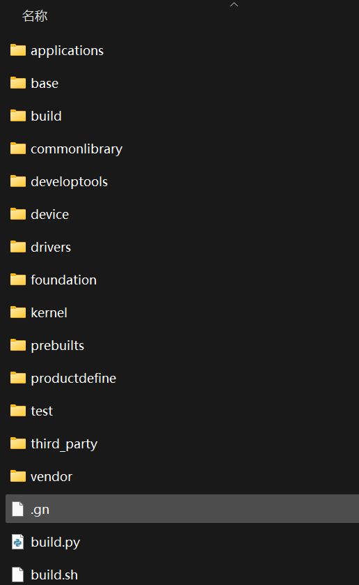</p><p data-lake-id="u244ff4c3" id="u244ff4c3"><span data-lake-id="u707cc0c4" id="u707cc0c4">观察VScode资源管理器，发现代码已经默认都加载进来了。</span></p><p data-lake-id="uc83fb0eb" id="uc83fb0eb">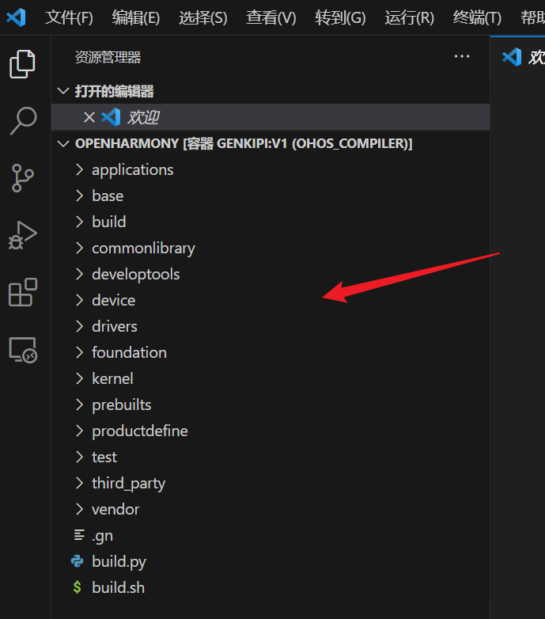</p><h5 data-lake-id="u73Z4" id="u73Z4"><span data-lake-id="u0da6076b" id="u0da6076b">程序编译</span></h5><ol list="u505a3e3c"><li data-lake-id="u7541a04c" fid="u71b2a9ae" id="u7541a04c"><span data-lake-id="ue6a912a0" id="ue6a912a0">在vscode中，打开命令终端，如下图：</span></li></ol><p data-lake-id="ue3def598" id="ue3def598" style="padding-left: 2em">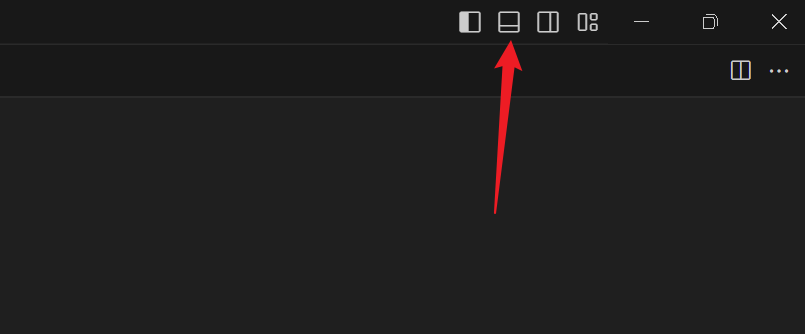</p><p data-lake-id="ud22d5875" id="ud22d5875" style="padding-left: 2em">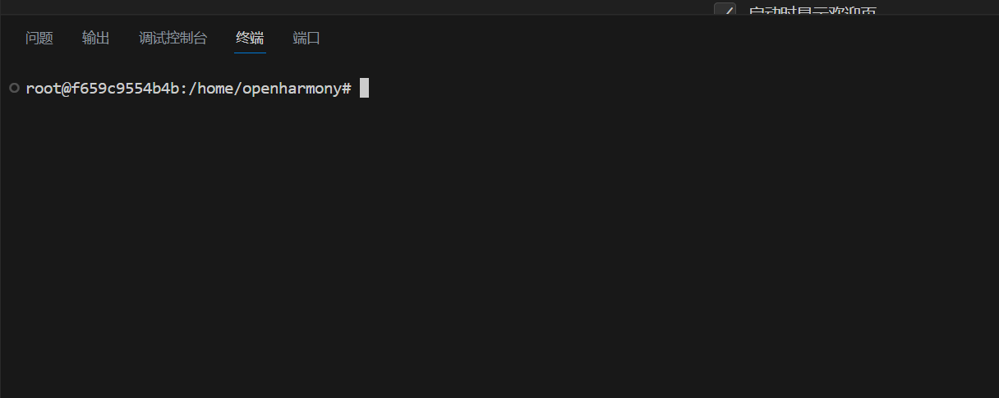</p><ol list="ufa69f8ed" start="2"><li data-lake-id="u05c3f4db" fid="u51eaef61" id="u05c3f4db"><span data-lake-id="u9037744b" id="u9037744b">配置开发板。在命令行中输入:</span></li></ol><span class="yuque-card-unsupported">[codeblock]</span><p data-lake-id="u4021848f" id="u4021848f" style="padding-left: 2em">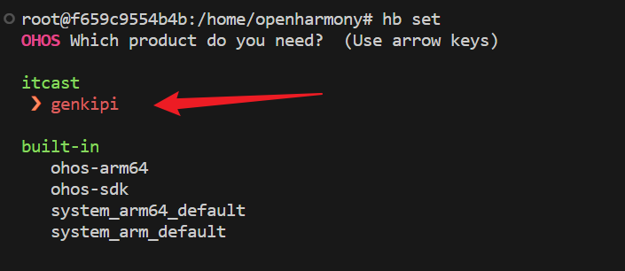</p><p data-lake-id="u4b48a38d" id="u4b48a38d" style="padding-left: 2em"><span data-lake-id="ubcfbc46a" id="ubcfbc46a">通过上下键选中，genkipi，然后回车，这样就为操作系统配置了开发板。</span></p><ol list="u0d5c0fd4" start="3"><li data-lake-id="u893c8271" fid="u003a000d" id="u893c8271"><span data-lake-id="u3e1aea48" id="u3e1aea48">编译代码。在命令行中输入：</span></li></ol><span class="yuque-card-unsupported">[codeblock]</span><p data-lake-id="ube4de7ed" id="ube4de7ed" style="padding-left: 2em">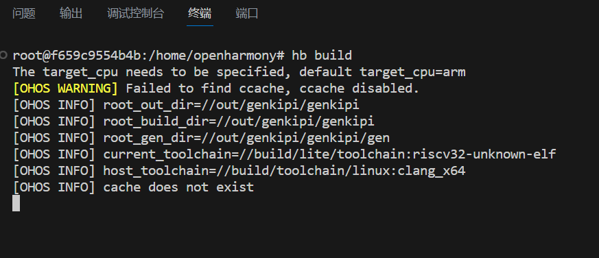</p><p data-lake-id="u1a15b1bf" id="u1a15b1bf" style="padding-left: 2em"><span data-lake-id="ub981e3b2" id="ub981e3b2">编译过程比较久，请耐心等待。</span></p><p data-lake-id="u124f9539" id="u124f9539" style="padding-left: 2em">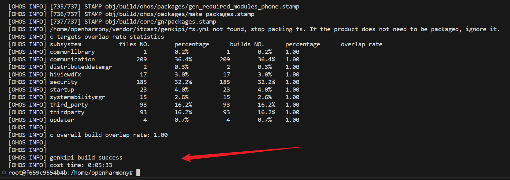</p><p data-lake-id="ub19c11b9" id="ub19c11b9" style="padding-left: 2em"><span data-lake-id="ubaee8c5a" id="ubaee8c5a">第一次编译花费的时间比较久，耐心等待。</span></p><ol list="ufff0adb4" start="4"><li data-lake-id="uaf8966d8" fid="u9bdf26a5" id="uaf8966d8"><span data-lake-id="ued137961" id="ued137961">程序烧录。本地打开</span><code data-lake-id="uab24776e" id="uab24776e"><span data-lake-id="uaacf255b" id="uaacf255b">hiburn</span></code><span data-lake-id="ue47ce54e" id="ue47ce54e">,选择烧录文件，进行烧录</span></li></ol><p data-lake-id="ue4ad9e30" id="ue4ad9e30" style="padding-left: 2em"></p><ul data-lake-indent="1" list="uc0e6ab95"><li data-lake-id="ua6d083ab" fid="u3e273457" id="ua6d083ab"><span data-lake-id="u4f986c90" id="u4f986c90">刷新串口，选中对应的串口</span></li><li data-lake-id="u596deb07" fid="u3e273457" id="u596deb07"><span data-lake-id="u4905e8da" id="u4905e8da">点击连接</span></li><li data-lake-id="ub26714f4" fid="u3e273457" id="ub26714f4"><span data-lake-id="ucdf3c732" id="ucdf3c732">选择烧录文件，文件在·</span><code data-lake-id="u81e9ad19" id="u81e9ad19"><span data-lake-id="uef249ce6" id="uef249ce6">out/genkipi/genkipi/Hi3861_wifiiot_app_allinone.bin</span></code></li></ul><p data-lake-id="u58f343ee" id="u58f343ee" style="padding-left: 4em"></p><ul data-lake-indent="1" list="uc0e6ab95" start="4"><li data-lake-id="u6e87c912" fid="u3e273457" id="u6e87c912"><span data-lake-id="u60556975" id="u60556975">点击开发板的重置按钮</span></li><li data-lake-id="ua78cf65a" fid="u3e273457" id="ua78cf65a"><span data-lake-id="ud1d50293" id="ud1d50293">点击sen file进行烧录</span></li><li data-lake-id="u9d5338b2" fid="u3e273457" id="u9d5338b2"><span data-lake-id="u3a9ee14c" id="u3a9ee14c">等待安装完成</span></li></ul><p data-lake-id="u142663f0" id="u142663f0" style="padding-left: 4em">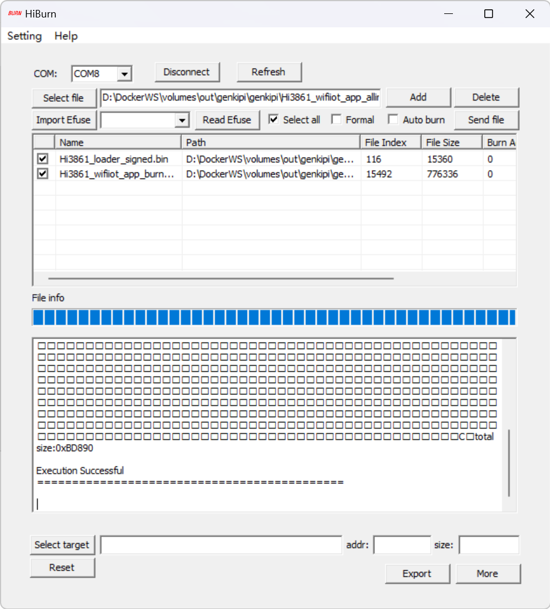</p><p data-lake-id="u1b59ac74" id="u1b59ac74"><span data-lake-id="u0c581e42" id="u0c581e42">点击重置按钮，观察日志输出：</span></p><p data-lake-id="uaaa2596e" id="uaaa2596e">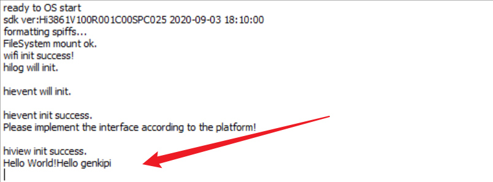</p><p data-lake-id="u3818978b" id="u3818978b"><br/></p><h3 data-lake-id="iu12P" id="iu12P"><span data-lake-id="u4b242fbd" id="u4b242fbd">开发环境搭建2</span></h3><ol list="ud750d378"><li data-lake-id="ufe38f45b" fid="u8546bd92" id="ufe38f45b"><span data-lake-id="u008fa7e7" id="u008fa7e7">导入镜像。命令行进入镜像目录，新的镜像名称为</span><code data-lake-id="ub77049bd" id="ub77049bd"><span data-lake-id="u7969bf4d" id="u7969bf4d">big.tar.gz</span></code></li></ol><span class="yuque-card-unsupported">[codeblock]</span><ol list="ub5c8e71c" start="2"><li data-lake-id="uf4461014" fid="ub98e3aee" id="uf4461014"><span data-lake-id="uddad57fe" id="uddad57fe">导入后，在</span><code data-lake-id="u3eeefcc2" id="u3eeefcc2"><span data-lake-id="ua1131573" id="ua1131573">Docker Desktop</span></code><span data-lake-id="u5f50c5b0" id="u5f50c5b0">中显示如下：</span></li></ol><p data-lake-id="u3639bae0" id="u3639bae0" style="padding-left: 2em">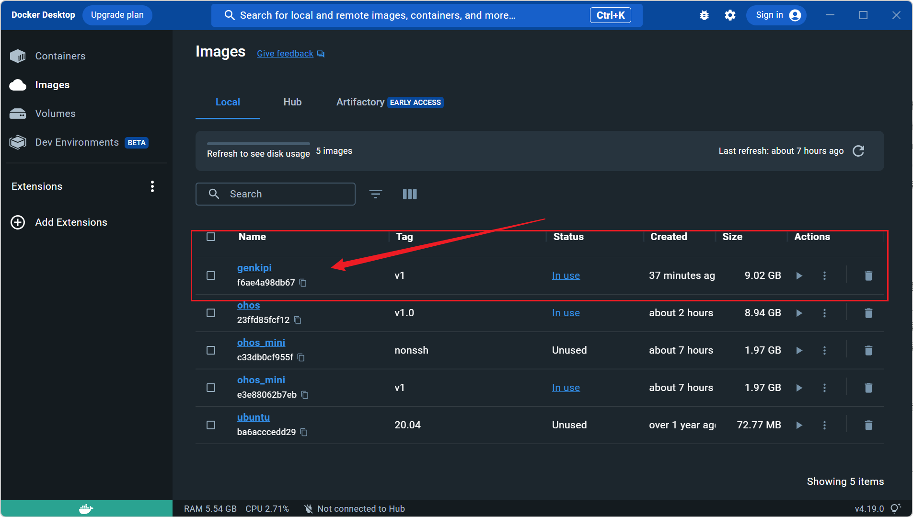</p><ol list="ud6329681" start="3"><li data-lake-id="u7c58ca11" fid="ub67278f7" id="u7c58ca11"><strong><span data-lake-id="uc578467a" id="uc578467a">通过命令运行镜像。此处不可使用gui启动</span></strong></li></ol><span class="yuque-card-unsupported">[codeblock]</span><ul data-lake-indent="1" list="u5abad7cb"><li data-lake-id="u7d4ce3e8" fid="u4f099f66" id="u7d4ce3e8"><code data-lake-id="u73b1583e" id="u73b1583e"><span data-lake-id="u90cd0ec8" id="u90cd0ec8">-p 40022:22</span></code><span data-lake-id="ub3acfcc5" id="ub3acfcc5">: 40022为本机port，22为容器port。意思是将本机port和容器port进行映射。</span></li></ul><p data-lake-id="ud5e9095b" id="ud5e9095b" style="padding-left: 2em">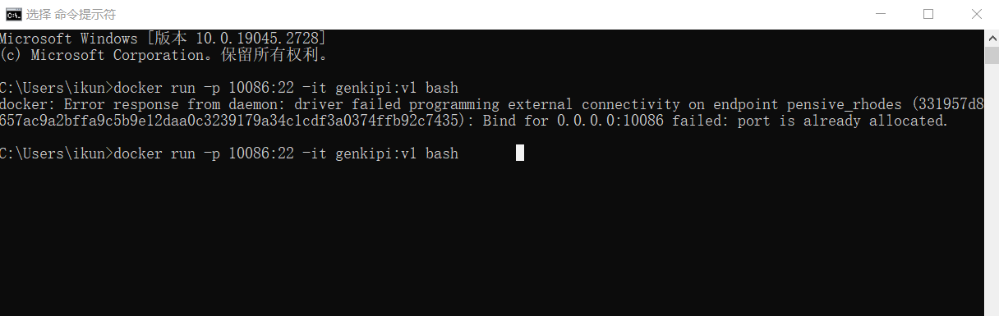</p><p data-lake-id="u4535ea00" id="u4535ea00" style="padding-left: 2em"><span data-lake-id="uca21801e" id="uca21801e">以上错误表示，本机的端口被占用，更换本机端口即可。</span></p><p data-lake-id="u905fcc92" id="u905fcc92"><br/></p><ol list="ub58913af" start="4"><li data-lake-id="ucc4de455" fid="u96d6e902" id="ucc4de455"><span data-lake-id="u733ae989" id="u733ae989">通过Mobaxterm进入到容器中，进行源码编译。</span></li><li data-lake-id="u4d3d5c30" fid="u96d6e902" id="u4d3d5c30"><span data-lake-id="ud3933917" id="ud3933917">将编译的输出文件拷贝到windows下，进行烧录。</span></li></ol><span class="yuque-card-unsupported">[codeblock]</span><ol list="ub58913af" start="6"><li data-lake-id="uc71907d8" fid="u96d6e902" id="uc71907d8"><span data-lake-id="udc4bea0e" id="udc4bea0e">烧录程序。</span></li></ol><h2 data-lake-id="LHzSR" id="LHzSR"><span data-lake-id="u5d73d5c3" id="u5d73d5c3">练习题</span></h2><ul list="u0ac95681"><li data-lake-id="uc0896282" fid="u9e5db342" id="uc0896282"><span data-lake-id="ubc3b3fc9" id="ubc3b3fc9">搭建基于Hi3861芯片的OpenHarmony开发环境</span></li></ul>